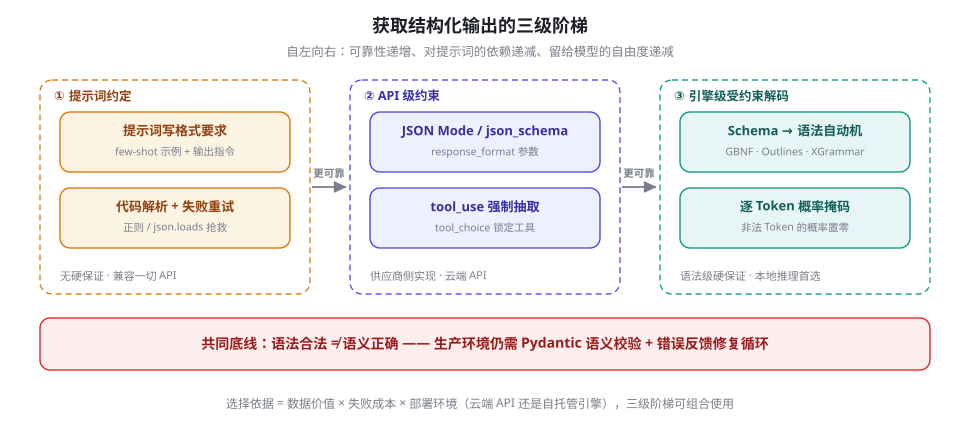
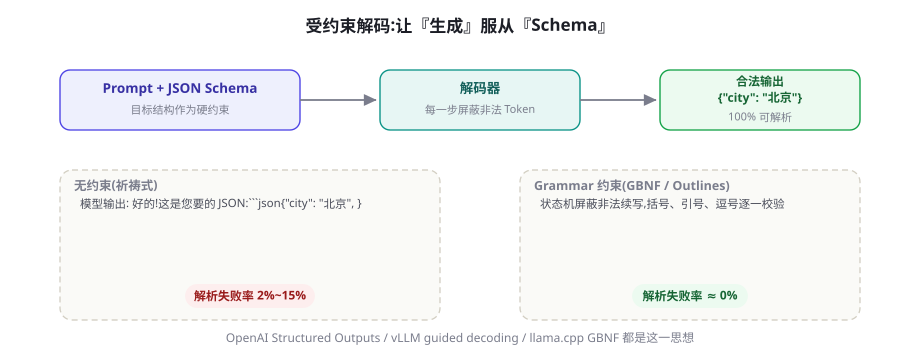

结构化输出：JSON Mode、Schema 与受约束解码
Agent 的每个动作最终都要变成程序能消费的数据，而不是一段漂亮话。本章讲清获取结构化输出的三级阶梯——提示约定、API 级 JSON Mode 与工具抽取、引擎级受约束解码——拆开受约束解码的机制，给一份够用的 JSON Schema 速成，并收束于 Schema 设计与失败修复的可靠性工程。
为什么 Agent 需要结构化输出
Agent 与聊天机器人的分水岭在于：输出要被代码消费。聊天场景里，模型多说一句「希望这能帮到你」无所谓；而在 Agent 里，输出要么变成一次函数调用的参数，要么变成流水线下一环的输入，要么被写进数据库。字符串的随意性在这里从「瑕疵」升级为「故障源」。
三类典型场景把这件事说得更具体：工具调用——模型要给出函数名与参数，你的代码才能执行（第 17 章的全景预演）；信息抽取——发票、简历、工单要变成带类型和枚举的字段；控制流——路由与分类要求输出必须是固定枚举之一（如 "refund" / "complaint"），你的程序要据此分支。
还要分清失败的两个等级。显式失败（解析抛异常）吵闹但无害——你至少知道它坏了；更危险的是静默损坏：字符串解析成功，但字段名写成了 city_name，金额混进了千分位逗号，日期格式今天是 2026-03-05、明天是 03/05——数据进了库、账算错了，而你毫无察觉。结构化输出的全部意义，就是把这两类失败都拦在写库之前。
反过来说，也不是什么输出都值得结构化：最终给人看的文本（报告、解释、聊天回复）保留自由生成反而质量更好。判据很简单——下游是代码，就上结构；下游是人，就留文本。两者都要时，让模型先自由推理、再用一次调用抽取成结构（第 8.5 节会回到这个技巧）。
而让模型「自由发挥、事后解析」的脆弱性是系统性的。自由文本里埋着一整排雷：寒暄前缀（「好的！这是您要的 JSON：」）、markdown 代码围栏、尾逗号、单引号、字段名漂移（date 一会儿写成 today_date）、值类型漂移（金额一会儿是 12800 一会儿是 "12,800 元"）。下面这段「抢救式解析」能跑，但每一条规则都来自一次线上事故：
import json, re
def parse_loose(raw: str) -> dict:
"""从自由文本里抢救 JSON —— 正确思路是让这段代码失去存在必要"""
text = re.sub(r"```(?:json)?|```", "", raw) # 去 markdown 围栏
m = re.search(r"\{[\s\S]*\}", text) # 截取第一段花括号
if not m:
raise ValueError("输出里根本没有 JSON")
s = re.sub(r",\s*([}\]])", r"\1", m.group()) # 去尾逗号
return json.loads(s)
raw = '好的！这是您要的 JSON：\n```json\n{"city": "北京", "date": "03-05",}\n```'
print(parse_loose(raw)) # 这次侥幸成功；下一次模型换个寒暄写法，又挂了结论先行：与其在下游修，不如在上游约束。行业为此发展出三级阶梯——提示词约定、API 级约束、引擎级受约束解码——可靠性与适用场景各不相同：

| 方式 | 格式保证强度 | 依赖 | 留给模型的自由度 | 典型场景 |
|---|---|---|---|---|
| 提示词约定 + 事后解析 | 无硬保证，失败率随 Schema 复杂度上升 | 任何 API / 本地模型 | 最大 | 原型验证、低价值批量任务 |
JSON Mode（json_object） | 只保证合法 JSON，不保证符合 Schema | OpenAI 系 API | 较大 | 下游本来就要再解析的场合 |
Structured Outputs / tool_use | Schema 级（部分供应商硬保证） | 云端 API | 中等 | 工具调用、字段抽取 |
| 引擎级受约束解码（GBNF / Outlines / XGrammar） | 文法级，100% 可解析 | 自托管推理引擎 | 最小（被文法封死） | 本地模型、离线批处理、高可靠性要求 |
Function Calling：把输出格式变成接口契约
Function Calling 是云端 API 对「结构化输出」的第一种工业化回答，机制固定为四步：其一，请求携带 tools 数组——每个工具给出名称、描述与 JSON Schema 形式的参数说明；其二，模型阅读上下文后决定是否调用，并以结构化字段（而非自由文本）返回调用意图；其三，你的代码解析参数、执行真实函数——记住第 4 章的铁律二，模型自始至终没有执行任何东西，它只是生成了「想调用什么」这段受约束的文本；其四，把执行结果作为新消息回填，进入下一轮对话。
import json
from openai import OpenAI
client = OpenAI() # 默认读环境变量 OPENAI_API_KEY
tools = [{
"type": "function",
"function": {
"name": "get_weather",
"description": "查询指定城市当前天气", # description 直接影响调用质量
"parameters": { # JSON Schema 描述参数
"type": "object",
"properties": {
"city": {"type": "string", "description": "城市名，如 北京"},
"unit": {"type": "string", "enum": ["celsius", "fahrenheit"]}
},
"required": ["city"]
}
}
}]
messages = [{"role": "user", "content": "北京今天多少度？"}]
resp = client.chat.completions.create(
model="gpt-4o-mini", messages=messages, tools=tools)
msg = resp.choices[0].message
if msg.tool_calls: # 模型决定调用工具
call = msg.tool_calls[0]
args = json.loads(call.function.arguments) # 注意：参数是 JSON 字符串
result = {"temp_c": -2, "condition": "晴"} # 真正执行的是你的代码
messages += [msg,
{"role": "tool", "tool_call_id": call.id,
"content": json.dumps(result, ensure_ascii=False)}]
final = client.chat.completions.create(
model="gpt-4o-mini", messages=messages) # 下一轮：模型基于结果作答这个设计优雅的地方在于 Schema 的双重身份：它既是给模型的说明书（模型据此知道该填什么），又是给你的校验器（拿到参数后可以照着它机器校验）。同一份契约服务两端，这是「提示词里写格式要求」永远做不到的。也因此，写 Schema 本身成了一门手艺——值得单开一节讲（下一节）。
还有一个高频细节：并行工具调用。模型的单次响应里 tool_calls 可以包含多个调用意图——用户问「北京和上海今天几度」时，模型可能同时发出两次 get_weather。编排规则很简单：无依赖的调用并行执行、结果按 id 对应回填，有依赖的必须等上一轮结果回来再发下一轮请求。并行能显著压缩 Agent 的时钟时间，但也放大了部分失败的处理复杂度（一个成功一个失败怎么办），完整的编排与补偿策略在 第 17 章展开。
Anthropic 的思路相同，请求与响应的形状不同：工具定义放在顶层 tools 参数，模型以 content 中的 tool_use 内容块（Content Block）返回调用，stop_reason="tool_use" 提示你该执行了；回填时用带 tool_result 块的 user 消息。对纯抽取任务，Anthropic 没有独立的 JSON Mode，官方推荐的做法是把「抽取」定义成一个永远不会被执行的伪工具，并用 tool_choice 强制模型必须填写这份「表格」：
import anthropic
client = anthropic.Anthropic()
resp = client.messages.create(
model="claude-sonnet-4-5", # 示例模型名，以官方文档为准
max_tokens=1024,
tools=[{
"name": "extract_invoice",
"description": "从文本中抽取发票的结构化字段",
"input_schema": {
"type": "object",
"properties": {
"vendor": {"type": "string", "description": "开票方"},
"amount": {"type": "number", "description": "含税金额/元"},
"currency": {"type": "string", "enum": ["CNY", "USD"]}
},
"required": ["vendor", "amount", "currency"]
}
}],
tool_choice={"type": "tool", "name": "extract_invoice"}, # 强制填表
messages=[{"role": "user",
"content": "供应商来函：XX 科技 3 月服务费 12,800 元人民币整。"}])
print(resp.content[0].input)
# {'vendor': 'XX 科技', 'amount': 12800.0, 'currency': 'CNY'}OpenAI 早期（2023-11）推出的 JSON Mode（response_format={"type": "json_object"}）只保证输出是合法 JSON，不保证符合你的 Schema——字段可能多、少、错名，还要求提示词里出现「JSON」字样。2024-08 推出的 Structured Outputs（json_schema + strict: true）才把约束下沉到 Schema 级。两者名字相近、保证相差一个数量级，选型时务必分清。参数语义随版本演进，以官方文档为准。
JSON Schema 在 Function Calling 里是双重身份，因此 description 字段不是注释，是提示工程的一部分（写法遵循第 6 章）：写清楚单位、格式、边界（「YYYY-MM-DD」「金额为数字，不带千分位」「找不到时填 null，不要编造」）。枚举值用 enum 而不是「请从以下选项中选择」的散文描述，模型的表现会稳定得多。
JSON Schema 速成：够用的那 20%
JSON Schema 是「数据的类型系统」，但日常写结构化输出，真正高频的关键词不到全集的两成：type（类型）、properties + required（字段与必填）、enum（枚举）、items（数组元素）、minimum/maximum 与 minLength/maxLength（数值与长度边界）、oneOf/anyOf（互斥分支）。把它们组合起来，绝大多数业务字段都能表达：
{
"type": "object",
"properties": {
"order_id": {"type": ["string", "null"],
"description": "订单号，原文原样复制；找不到填 null，不要编造"},
"channel": {"type": "string", "enum": ["app", "web", "phone"]},
"items": {
"type": "array",
"description": "订单中的商品行，每行一个对象",
"items": {
"type": "object",
"properties": {
"sku": {"type": "string", "description": "商品编码"},
"qty": {"type": "integer", "minimum": 1},
"price": {"type": "number", "description": "单价，数字，不带货币符号"}
},
"required": ["sku", "qty", "price"]
}
}
},
"required": ["order_id", "channel", "items"]
}四个书写要点。第一，可空字段用类型数组（"type": ["string", "null"]）而不是从 required 里悄悄删掉——OpenAI 的 strict 模式要求所有字段出现在 required 中，「可选」一律用可空类型表达，这是初学者最常撞的坑。第二，互斥结构用 oneOf：例如支付结果要么是成功（带交易号）要么是失败（带原因码），两个分支各自一个对象，比硬塞进一个「字段全可空」的扁平结构更不容易出错。第三，数值边界写进 Schema（minimum、maximum），让校验器替你把关；但注意部分 API 的 strict 模式早期不支持全部校验性关键词（如正则 pattern、数组长度），支持范围以官方文档为准，兜底校验放在应用层。第四，嵌套越浅越好：三层以上的嵌套对象会让错误率明显上升，把「一个巨型 Schema」拆成「两次简单调用」往往是净赚的。
对支持工具调用的模型来说，工具与参数的 description 会随请求一起进入上下文，是模型理解「这个字段要什么」的主要依据——它本质上是随结构化接口走的微型提示词。实践中的经验法则：每个字段的 description 至少回答「类型、单位、格式、找不到怎么办」四件事；共享约束写在容器级 description（如「所有金额均为人民币」），避免在每个字段里重复。
受约束解码：在概率分布上做「掩码手术」
Function Calling 的格式保证依赖供应商在服务端的实现；当你自己托管模型时，可以把这套保证握在手里，而且做得更彻底——受约束解码（Constrained Decoding）。核心机制一句话：在每一步 Token 采样前，用一个与 Schema 等价的状态机检查「当前已生成前缀之下，哪些 Token 是合法续写」，把非法 Token 的 logits 置为负无穷，再照常采样（采样参数见第 5 章）。无论温度多高、模型多想寒暄，输出永远落在文法之内——「输出合法」从概率问题变成了计算问题。

工程实现固定为三步：编译——把 JSON Schema 或正则转成有限状态机（FSM），一次完成、随后复用；掩码——每步根据 FSM 当前状态查出合法 Token 集合，作用到 logits 上；推进——采样出 Token 后把状态机前移。难点藏在一个不起眼的地方：Token 与语法单元的边界不对齐。分词器的一个 Token 可能横跨多个字符，出现「前半合法、后半越界」的续写——这正是把字符级 FSM 投影到 Token 级时必须处理的组合问题。
「每个 Schema × 每个模型的分词器」都要重算一次 Token 级掩码表，早期的朴素实现每步都要遍历词表，开销可达生成的百分之几十。两项工作把它压到近零：Outlines（Willard & Louf, 2023）把 FSM 状态到合法 Token 的映射预索引，每步开销摊薄为一次查表；XGrammar（Dong et al., 2024）用自适应 Token 树缓存上下文无关的检查、只对上下文相关部分做运行时验证，成为 vLLM 等引擎的主流后端之一。你不需要复现它们，但排障时应知道瓶颈在「编译」与「每步掩码」两处，编译结果通常值得缓存复用。
问题：让开源模型输出符合任意正则/上下文无关文法，且不牺牲生成速度。方法：把正则或 JSON Schema 编译为有限状态机，按状态预索引合法 Token，生成时逐步掩码。结果：受约束生成近零开销，成为开源结构化输出生态（vLLM、SGLang 等）的奠基实现。
还必须分清约束与提示的分工。文法约束封死的是「形状」：括号、引号、字段名、类型；它管不了「内容」："city" 的值是不是一个真实存在的城市、金额是不是原文里那个数字——这些语义正确性只能靠 description、检索接地与应用层校验（第 63 章）。常见误用是「上了受约束解码就不再写 description」，结果格式完美、值全在编——结构约束和提示工程是互补品，不是替代品。
与工程的接口也值得交代两句。服务集成：vLLM、SGLang 等引擎已把受约束解码做成服务端参数，客户端只传 Schema，编译与缓存在引擎内部完成；自己写推理循环时才需要 Outlines 这类库级钩子。编译缓存：Schema 不变时编译产物必须复用，把「Schema 版本 → 编译缓存」的键值管理纳入服务生命周期，Schema 升版预热缓存后再切流量。与提示链的关系：第 7 章的提示链之所以脆弱，往往正是链节之间的「文本接口」没有契约——把每个链节的输出声明成 Schema 并挂上约束，提示链立刻从「祈祷式串联」变成「接口式串联」，这是受约束解码对多步系统最大的杠杆。
本地推理侧最普及的是 llama.cpp 的 GBNF（GGML BNF，BNF 文法的方言）。手写文法适合简单结构，复杂 Schema 可用仓库自带的 json_schema_to_grammar.py 自动转换：
root ::= object
object ::= "{" ws "\"city\"" ws ":" ws string ws "," ws "\"date\"" ws ":" ws string ws "}"
string ::= "\"" ([^"\\] | "\\" .)* "\""
ws ::= [ \t\n]*llama-cli -m qwen2.5-7b-instruct-q4_k_m.gguf \
--grammar-file city-date.gbnf \
-p "帮我订 3 月 5 日去北京的机票，只输出 JSON：" # 无论模型多想寒暄，输出都在文法内如果不想碰文法，Outlines 允许直接把 Pydantic 模型喂给生成器，Schema 编译全自动：
import outlines
from pydantic import BaseModel
class Reply(BaseModel):
city: str
date: str
model = outlines.models.transformers("Qwen/Qwen2.5-7B-Instruct")
generator = outlines.generate.json(model, Reply) # Schema → FSM，一次编译
reply = generator("帮我订 3 月 5 日去北京的机票")
print(reply.city, reply.date) # 北京 03-05 —— 100% 符合 Schema最后是它的边界，说清楚免得被反噬。受约束解码的性能代价主要是编译与掩码查询，现代实现已近零，但 Schema 频繁变化、每次都重编译时开销会显形——生产上固定 Schema 版本、缓存编译产物。表达能力边界在于：文法是形式语言，表达不了「城市必须真实存在」「价格与昨天一致」这类需要外部知识的约束。还有实验证据（下一节详述）表明掩码可能干扰推理——对高难推理任务，先给模型「自由思考」的空间，再对结果做结构化，往往比全程硬约束更稳。
五种主流落地方案横向对比
把上面两条路线（API 级与引擎级）摊开，生产上可选的方案集中在五种。其一，OpenAI Structured Outputs：response_format={"type": "json_schema", "json_schema": {"name": "...", "schema": {...}, "strict": true}}，工具定义同样支持 strict；限制是所有字段必须声明为 required（可选字段用可空类型表达），部分 JSON Schema 关键字早期不受支持，官方宣称在支持范围内达到 100% 遵循。其二，Anthropic tool-use 式抽取：如上文的伪工具 + tool_choice 强制；参数符合 Schema 是训练出来的软约束，客户端仍要校验。
其三，vLLM 引导式解码（Guided Decoding）：自托管服务首选，OpenAI 兼容接口上通过 extra_body 传入约束，后端可选 XGrammar / Outlines：
pip install vllm
vllm serve Qwen/Qwen2.5-7B-Instruct # 默认监听 :8000，即开即用from openai import OpenAI
client = OpenAI(base_url="http://localhost:8000/v1", api_key="EMPTY")
schema = {
"type": "object",
"properties": {"city": {"type": "string"}, "date": {"type": "string"}},
"required": ["city", "date"]
}
resp = client.chat.completions.create(
model="Qwen/Qwen2.5-7B-Instruct",
messages=[{"role": "user", "content": "订 3 月 5 日去北京的机票"}],
extra_body={"guided_json": schema}, # vLLM 受约束解码入口
)
print(resp.choices[0].message.content) # 输出保证符合 schema其四，llama.cpp GBNF：端侧与单机场景的标配，除 --grammar-file 外，llama-server 也接受请求体里的 grammar 字段。其五，库级方案：Outlines、lm-format-enforcer、Microsoft Guidance 等直接接入 HuggingFace Transformers，适合研究与离线批处理。别漏了端侧的进展：Ollama 也提供了接受 JSON Schema 的 format 参数，本地结构化输出不再是奢侈品的调用形态如下（参数名以官方文档为准）：
curl http://localhost:11434/api/chat -d '{
"model": "qwen2.5:7b",
"messages": [{"role": "user", "content": "订 3 月 5 日去北京的机票"}],
"stream": false,
"format": {
"type": "object",
"properties": {"city": {"type": "string"}, "date": {"type": "string"}},
"required": ["city", "date"]
}
}'怎么选？问自己四个问题：数据敏感吗——敏感就走本地（vLLM / llama.cpp）；量有多大——大批量离线抽取走云厂商 Batch 接口或自托管批处理；Schema 多复杂——深嵌套、多互斥分支时优先硬约束方案；模型能不能换——模型固定在云 API 上时，方案只能在 API 级里选。四个答案拼起来，通常只剩一个可行解。
| 方案 | 约束层级 | 接口入口 | 保证强度 | 典型场景 |
|---|---|---|---|---|
| OpenAI Structured Outputs | 服务端解码 | response_format / strict 工具 | Schema 级硬保证（支持范围内） | 云端生产 API |
| Anthropic tool-use 抽取 | 训练 + 服务端 | tools + tool_choice | 强软约束，需客户端校验 | 云端抽取与 Agent 工具调用 |
| vLLM Guided Decoding | 本地引擎解码 | extra_body.guided_json | 文法级硬保证 | 自托管批量服务 |
| llama.cpp GBNF | 本地引擎解码 | --grammar-file / grammar | 文法级硬保证 | 端侧、单机、离线 |
| Outlines / lm-format-enforcer | 库级解码钩子 | Transformers 集成 | 文法级硬保证 | 研究、自定义管线 |
可靠性工程：语法合法只是及格线
受约束解码解决的是「输出能不能解析」，生产系统还要回答「解析出来的东西对不对」。校验应分三层：语法校验（json.loads 能不能过）、模式校验（Pydantic / JSON Schema：字段、类型、枚举）、语义校验（值域与业务规则：金额大于零、日期可解析、城市在服务范围内、抽取值确实出现在原文里）。前两层可以被现成工具自动化，第三层必须由你按业务写规则。
语义错误有两类典型。一是值幻觉：格式完全正确，值是编的——把发票日期填成当天、给用户没提过的城市补上天气。任何解码方式都救不了它，只有校验、检索接地与交叉核对能救（治理体系见第 63 章）。二是边界值漂移：单位混用、时区错乱、币种张冠李戴。对高价值字段，惯用做法是「模型抽取 + 代码规则 + 必要时第二次核对调用」。校验失败后的标准动作是错误反馈修复循环——把校验错误原文喂回去，让模型只修错误：
from pydantic import BaseModel, Field, ValidationError
class Invoice(BaseModel):
vendor: str = Field(description="开票方名称")
amount: float = Field(description="含税金额，单位元，大于 0")
currency: str = Field(description="ISO 4217 代码，如 CNY")
def extract(text: str, max_retry: int = 2) -> Invoice:
msgs = [{"role": "user", "content": f"从下面文本抽取发票字段：\n{text}"}]
for _ in range(max_retry + 1):
raw = call_llm(msgs, json_schema=Invoice.model_json_schema())
try:
return Invoice.model_validate_json(raw) # 语法 + 模式双重校验
except ValidationError as e:
msgs += [{"role": "assistant", "content": raw},
{"role": "user",
"content": f"输出不符合 Schema：\n{e}\n"
f"只输出修正后的 JSON，不要解释。"}]
raise RuntimeError("连续校验失败，转人工或降级处理")Schema 设计本身就是提示工程，几条经验值得直接抄：字段少而浅——嵌套每深一层，错误率上升一档，复杂结构拆成两次调用；能用 enum 就不用字符串；可选字段用可空类型而不是省略 required；主键、时间戳、UUID 让模型留空，由代码生成——模型不需要也不擅长「编」这些字段。采样上，抽取与工具调用用低温度（0~0.3）；但在受约束解码下，过低温度可能放大重复与退化，观测到退化时适当回温。
再补三块生产上绕不开的拼图。流式场景：输出一边生成一边展示时，JSON 到最后一个字符才完整，前端可以用「部分 JSON 解析器」渲染已到达的字段，但要意识到流式中途的任何前缀都不保证合法——不要边流边写库。回归测试：把线上真实样本沉淀成「金样本集」，Schema 或模型每次变更后跑一遍解析率与字段级准确率，防止「升级反而变差」悄悄发生（评测方法论见 第 13 章）。多轮工具调用：Agent 循环里每一次 tool_calls 的参数都应过同一套校验器——校验器不属于某次调用，而属于整个循环（第 17 章）。
中文场景另有一组特色雷区值得单独点名：模型容易把全角/半角混进数字与标点（「１２８００」与「12800」解析结果不同）；金额常被写成带单位的中文（「1.28 万元」），Schema 里却声明了 number；日期出现「3 月 5 号」「2026/3/5」「2026-03-05」多种形态。对策是在 description 里明确「数字用半角、单位统一为元、日期一律 YYYY-MM-DD」，并在校验层加一道归一化（normalize 函数）兜底——与其指望模型永远守规矩，不如把「格式归一」做成确定性的代码步骤。
问题：强制模型按严格 JSON 格式作答，会不会伤害它的推理能力？方法与结果：在多个推理任务上对比自由文本与格式约束输出，发现格式约束可带来明显下滑，且约束越严、下降越大；缓解办法是「先推理后格式」——在结构里给一个推理字段，或先自由作答再抽取。启示：受约束解码不是免费午餐，高难推理任务建议给模型留「思考位」。
上线后持续监控三层校验的失败率，按 Schema 版本分桶统计；失败率突增往往先于业务事故出现。批量离线抽取走 Batch API（OpenAI 等供应商对批处理有约五折定价），把省下的钱花在二次核对上。重试、限流与成本核算的完整工程在第 12 章展开；不依赖框架的手写实现见第 27 章。
本章小结
- Agent 输出要被代码消费，自由文本解析是打地鼠游戏；比解析失败更危险的是静默损坏。判据：下游是代码就上结构，下游是人就留文本。
- 结构化输出分三级阶梯：提示词约定（无保证）→ API 级约束（JSON Mode / Structured Outputs / tool_use 抽取）→ 引擎级受约束解码（文法级硬保证）；JSON Mode 只保证合法 JSON，与 Schema 级的 Structured Outputs 相差一个数量级。
- Function Calling 的本质仍是受约束的文本生成：模型返回调用意图，执行权与校验权都在你的代码；伪工具 + tool_choice 强制是抽取任务的标准姿势。
- 日常够用的 JSON Schema 只占全集两成：type/properties/required/enum/items/oneOf；可空字段用类型数组、互斥分支用 oneOf、嵌套越浅越好，description 是随接口走的微型提示词。
- 受约束解码在每步采样前把非法 Token 概率置零，把「输出合法」从概率问题变成计算问题；Outlines、XGrammar、GBNF 是三大主流实现，难点在 Token 与语法单元的边界对齐；它管形状、管不了内容的真实。
- 生产可靠性 = 语法→模式→语义三层校验 + 错误反馈修复循环 + 金样本回归 + 把校验失败率当线上指标；格式约束可能伤害推理，给模型留「思考位」是实用缓解。
自测题
- JSON Mode 与 Structured Outputs 的保证差异是什么？为什么说两者「相差一个数量级」？（提示：合法 JSON 是不是就等于符合你的字段与类型要求？）
- 为什么说 Schema 的 description 是「随结构化接口走的微型提示词」？给「金额」字段写一条合格的 description。（提示：类型、单位、格式、找不到怎么办。）
- 受约束解码为什么能做到 100% 可解析？它把什么问题从概率域搬到了计算域？（提示：每一步采样前发生了什么？）
- 受约束解码能保证「city 字段的值是真实存在的城市」吗？为什么？该靠什么保证？（提示：文法约束的是形状；语义校验与检索接地。）
- Anthropic 没有独立 JSON Mode 时，抽取任务的标准做法是什么？（提示：伪工具 + tool_choice。）
- 一段输出通过了 Pydantic 校验，金额字段却是编造的。哪一层防线能拦住它？为什么受约束解码拦不住？（提示：语法/模式/语义三层校验各自的覆盖范围。）
参考文献与延伸阅读
- OpenAI (2024). Introducing Structured Outputs in the API. OpenAI Blog. openai.com
- Willard, B. T. & Louf, R. (2023). Efficient Guided Generation for Large Language Models. arXiv:2307.09702；项目：github.com/dottxt-ai/outlines
- Dong, Y. et al. (2024). XGrammar: Flexible and Efficient Structured Generation Engine for Large Language Models. arXiv:2411.15100
- Geng, S. et al. (2023). Grammar-Constrained Decoding for Structured NLP Tasks without Finetuning. EMNLP 2023. arXiv:2305.13971
- Tam, Z. R. et al. (2024). Let Me Speak Freely? Format Restrictions on Creativity in LLMs. arXiv:2408.02442
- Schick, T. et al. (2023). Toolformer: Language Models Can Teach Themselves to Use Tools. arXiv:2302.04761
- Patil, S. et al. (2023). Gorilla: Large Language Model Connected with Massive APIs. arXiv:2305.15334
- llama.cpp 项目与 GBNF 文法文档. github.com/ggml-org/llama.cpp；vLLM 项目. github.com/vllm-project/vllm